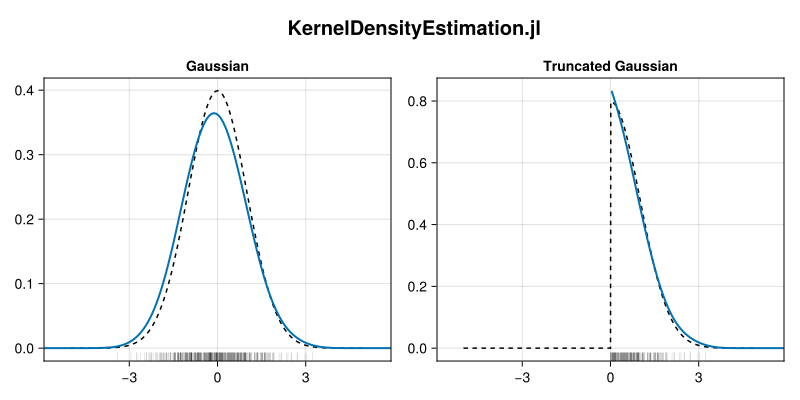

Kernel Density Estimation
KernelDensityEstimation.jl is a package for calculating univariate (1D) kernel density estimates from vectors of data. Its main features (and limitations) are:
- Uses a Gaussian kernel for smoothing (truncated at $4σ$).
- Supports closed boundaries.
- Supports processing weighted samples.
- Provides higher-order estimators to better capture variation in width and slope of distributions.
- A more sophisticated bandwidth estimator than the typical Silverman rule.
- Limited to 1D curves — does not support 2D densities.
This package largely implements the algorithms described by Lewis (2019)[1] (and its corresponding Python package, GetDist).
Why another kernel density estimation package?
As of Nov 2024, much of the Julia ecosystem uses the KernelDensity.jl package (possibly implicitly, such as through density plots in Makie.jl, StatsPlots.jl, etc).
Consider the following (toy) examples: one case where we have samples drawn from a Gaussian distribution, and a second where only the positive values are retained.
using Random
# A vector of Gaussian random deviates
rv_gauss = randn(500)
# and its expected distribution
x = -5.0:0.01:5.0
exp_gauss = @. exp(-x^2 / 2) / sqrt(2π)
# Then filter the random deviates to be strictly positive
rv_trunc = filter(>(0.0), rv_gauss)
# and its corresponding distribution (×2 to keep normalization)
exp_trunc = @. ifelse(x > 0.0, 2exp_gauss, 0.0)Plotting Setup
using CairoMakie
function draw_KD(grid, rv, (x, exp_dist), (z, kde_dist), title)
ax = Axis(grid, title = title)
# draw the reference expectation distribution
lines!(ax, x, exp_dist, linestyle = :dash, color = :black)
# draw the kernel density estimate
lines!(ax, z, kde_dist, linewidth = 2, color = Cycled(1))
# add a shadow axis and marks along the bottom edge to indicate
# the location of the random deviates
ax2 = Axis(grid, limits = (nothing, (0.0, 1.0)))
vlines!(ax2, rv, ymin=0.0, ymax=0.03, linewidth = 0.5, color = (:black, 0.2))
hidedecorations!(ax2)
hidespines!(ax2)
linkxaxes!(ax2, ax)
# fix the range of the axes
xlims!(ax2, -5.9, 5.9)
endIf we then plot the outputs of running the KernelDensity.kde method on each of these two vectors:
import KernelDensity as KD
kd_gauss = KD.kde(rv_gauss)
kd_trunc = KD.kde(rv_trunc)
Plotting Code
fig = Figure(size = (800, 400))
# Gaussian distribution & KDE
ref = (x, exp_gauss)
kd = (kd_gauss.x, kd_gauss.density)
draw_KD(fig[1, 1], rv_gauss, ref, kd, "Gaussian")
# Truncation Gaussian distribution & KDE
ref = (x, exp_trunc)
kd = (kd_trunc.x, kd_trunc.density)
draw_KD(fig[1, 2], rv_trunc, ref, kd, "Truncated Gaussian")
Label(fig[0, :], "KernelDensity.jl", font = :bold, fontsize = 20)For the Gaussian distribution (left) where there are no edges, the density estimate appears to be a reasonable approximation of the known Gaussian distribution. In comparison, though, the truncated Gaussian distribution (right) fails to represent the hard cut-off at $x = 0$, instead "leaking" below zero with non-zero density despite the known closed boundary.
Closed boundaries are common among many probability distributions,[bounded] and therefore the need to estimate a density corresponding to a (semi-)bounded distribution arises often. This package provides a density estimator that uses any provided boundary conditions to account for edge boundary effects, reproducing a more faithful representation of the underlying distribution.
Repeating the density estimation on the Gaussian and truncated Gaussian distributions shown above instead with this package's kde method:
import KernelDensityEstimation as KDE
kde_gauss = KDE.kde(rv_gauss)
kde_trunc = KDE.kde(rv_trunc, lo = 0.0, boundary = :closedleft)
Plotting Code
fig = Figure(size = (800, 400))
# Gaussian distribution & KDE
ref = (x, exp_gauss)
kd = (kde_gauss...,)
draw_KD(fig[1, 1], rv_gauss, ref, kd, "Gaussian")
# Truncation Gaussian distribution & KDE
ref = (x, exp_trunc)
kd = (kde_trunc...,)
draw_KD(fig[1, 2], rv_trunc, ref, kd, "Truncated Gaussian")
Label(fig[0, :], "KernelDensityEstimation.jl", font = :bold, fontsize = 20)Most obviously, the truncated distribution retains its closed boundary condition at $x = 0$ and does not suffer from the leakage and suppression of the peak that occurs with the KernelDensity estimator. Furthermore, both density curves are smoother due to use of higher-order estimators which simultaneously permit using [relatively] wider bandwidth kernels while retaining the shapes of peaks (and non-flat slopes at closed boundaries).
- 1A. Lewis. GetDist: a Python package for analysing Monte Carlo samples (2019), arXiv:1910.13970.
- boundedFor example, see the list of distributions with bounded and semi-infinite support on Wikipedia.